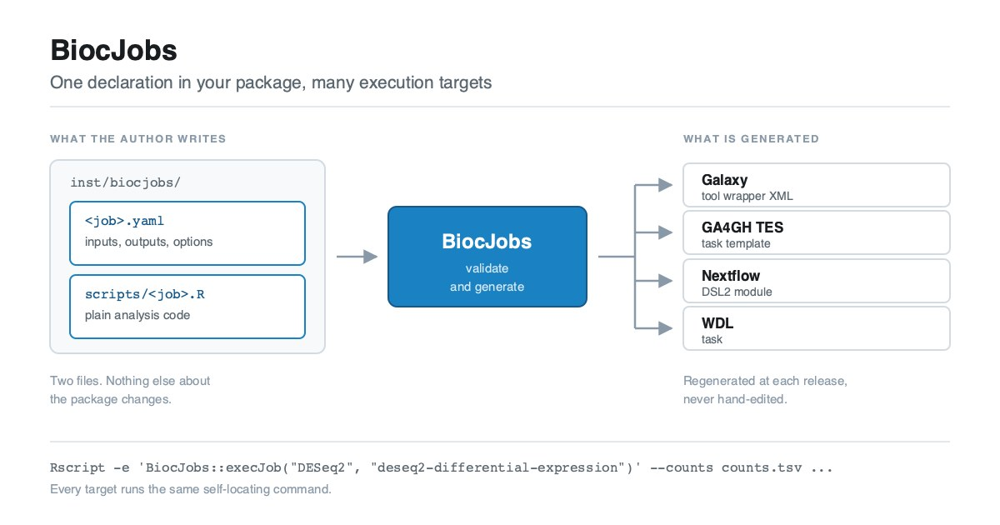

The gap
Much of what Bioconductor packages do is interactive and exploratory, and rightly belongs in an R session. But some of it is batch-shaped: a well-defined analysis with file inputs, file outputs, and a handful of parameters. Differential expression, normalisation, peak calling, amplicon denoising, quantification import. None of these need a human in the loop once the parameters are chosen, and this project targets that subset.
Yet every workflow system that wants to offer one of these analyses today needs a hand-written wrapper: Galaxy, Nextflow, engines for CWL (Common Workflow Language) and WDL (Workflow Description Language), cloud batch services. Those wrappers are usually maintained by someone who is not the package author, and they drift out of sync with the package at every release. The community’s hand-written Galaxy wrappers are excellent, but each one took expert effort to build and takes expert effort to keep current. The long tail of Bioconductor packages will never get that treatment. An earlier post on this blog, Bringing Bioconductor to Galaxy, walks through what writing one of those wrappers by hand actually involves.
There is an ownership problem underneath the maintenance problem. The person who knows which entry points make sense non-interactively, what the inputs mean, and which parameters actually matter is the package author.
Where this came from
This is not a new observation, and the framework described here is the result of a long series of conversations rather than a single design session.
Two of those conversations were decisive. At the ELIXIR All Hands Meeting in Lyon in early June 2026, and again at the Galaxy Community Conference in Clermont-Ferrand later that month, discussions between Bioconductor and Galaxy people kept converging on the same idea from different directions. There is real and growing appetite for automatically wrapping Bioconductor tools for Galaxy, provided it can be done in a high-quality, developer-driven way rather than as a lowest-common-denominator scrape of function signatures. That qualifier is the whole design constraint. A generated wrapper is only worth having if it is as good as a careful hand-written one, and the way to get there is to have the package author declare the interface deliberately, not have automation scrape it from functions.
The scope widened during those same discussions. Once an author has declared a job precisely enough to generate a good Galaxy tool, that same declaration should carry most of what a general workflow dispatcher needs. It seemed wasteful to spend the effort and get only Galaxy out of it.
Why the GA4GH task model became the goal
The design settled on the GA4GH Task Execution Service (TES) task model as the common denominator.
TES is small. A task is: some input files staged in, a short sequence of executors, each one a container image plus a command run one after another, some resource requirements, and some output files collected out. That sequence is the only structure TES has. No branching, no fan-out, no data flow between tasks; orchestration is explicitly somebody else’s job. That minimalism is what makes it a good target for package developers. If a unit of analysis can be expressed as a TES task, it can be projected onto a Galaxy tool, a Nextflow process, a WDL task, or a cloud batch submission without rewriting.
So BiocJobs declarations are shaped around that model, and Galaxy became one target among several rather than the only one.
What a job looks like
A package opts in by adding two files under inst/biocjobs/. Nothing else about the package changes: no new imports, no code changes, no build-system requirements. Packages that are inherently interactive simply do not add the directory.
The first file is the declaration: what the job consumes, produces, and exposes. Abridged here from the example DESeq2 spec, which declares two inputs, three outputs and nine options:
biocjobs: "1.0"
name: deseq2-differential-expression
package: DESeq2
title: DESeq2 differential expression
description: >
Runs the canonical DESeq2 workflow on a raw count matrix: size factor and
dispersion estimation, negative-binomial GLM fitting and a Wald test for
one pairwise contrast.
version: "1.0.0"
script: scripts/deseq2-differential-expression.R
depends: [apeglm, ashr]
inputs:
- name: counts
format: tsv
label: Raw count matrix
help: >
Tab-separated matrix of raw (un-normalized) integer read counts.
outputs:
- name: results
format: tsv
label: Differential expression results
options:
- name: shrinkage
type: choice
choices: [apeglm, ashr, normal, none]
default: apeglm
label: Log2 fold change shrinkage
- name: alpha
type: float
default: 0.1
min: 0
max: 1
label: FDR threshold
resources:
cpus: 1
memory_gb: 4
citations:
- doi: 10.1186/s13059-014-0550-8The second file is the script: plain R, around 130 lines for DESeq2, effectively the analysis script to dispatch. Its first line hands the entire interface over to the declaration:
params <- BiocJobs::jobParams("DESeq2", "deseq2-differential-expression")That call parses the command line against the declaration, applying type coercion, defaults, numeric bounds, enumerated choices, required-parameter checks and output directory creation. What is notably absent from the script is any argument parsing, any type checking, and any usage message, handled by the BiocJobs framework. The rest of the file is ordinary analysis code reading params$counts, params$alpha and so on.
What comes out

From that one declaration, BiocJobs generates:
| Target | Artifact |
|---|---|
| Galaxy | tool wrapper XML, with typed params, datatypes, tests and citations |
| GA4GH TES | a v1.1 task template, ready to POST to a TES server such as Funnel or TESK, or to a cloud endpoint |
| Nextflow | a Nextflow DSL2 module with typed inputs, named emit: outputs and a stub block |
| WDL | a 1.0 task with runtime and parameter_meta |
Every target launches the same self-locating command, so the artifacts carry no absolute paths and do not drift against the installed package:
Rscript -e 'BiocJobs::execJob("DESeq2", "deseq2-differential-expression")' \
--counts counts.tsv --coldata coldata.tsv \
--contrast_factor condition --contrast_numerator treated \
--contrast_denominator control --alpha 0.05First implementation, at the BioC2026 hackathon
The first working implementation was built at the BioC2026 hackathon in Seattle in August 2026, spearheaded by Alexandru Mahmoud, and taken far enough to get a first working example.
DESeq2 was chosen for this purpose. It is a popular package, batch-shaped, and is already used in many workflow engines, hence having something to compare against after generating the wrappers. A fork of DESeq2 carries the two inst/biocjobs/ files a maintainer would add.
The job itself was run end to end in R against simulated data, 600 genes by 6 samples with 60 planted differentially expressed genes, recovering the planted signal; the same run through the generated command-line path produced byte-identical results. The generated artifacts were then checked with the tooling each ecosystem uses. The Nextflow module passes nextflow lint with zero findings and executes under -stub-run with correct channel and emit: wiring. The WDL task passes miniwdl check. The Galaxy wrapper validates against Galaxy’s official tool XML schema (XSD), and the TES task against the GA4GH TES 1.1 tesTask schema.
What none of that establishes is whether a generated artifact survives a real workflow run against real data, which is where the next section comes in.
Independent evaluations
The most useful outcome from the Hackathon collaboration was an evaluation by Nextflow and WDL users. The WDL evaluation was documented in the WILDS WDL Library which added a run_deseq2_biocjobs task to the ww-deseq2 module, calling BiocJobs::execJob() as an alternative to the module’s existing hand-written R script, and ran it against real data. It produced valid results tables, normalised counts and plots.
The PR was closed rather than merged, with more testing to come in the future.
Feedback, in the form of GitHub issues, was provided regarding the formatting of the Nextflow module files generated by BiocJobs. Topics to consider include:
- The extent to which we should strive for compatibility with nf-core
- Separate input items vs inputs grouped into tuples, with the latter being useful in multi-sample processing
- Use of the
tagdirective - Naming of output files
As a test from the Bioconductor package developer perspective, an example job was successfully developed for the VariantAnnotation package. The job takes as inputs an indexed VCF, a BED indicating regions of interest, and a list of sample names, and produces a TSV of genotypes reformatted as alternative allele counts.
A subproject: per-package containers
Making a job dispatchable exposes a second problem immediately. A generated wrapper needs an environment containing R, the host package, and the job’s declared dependencies, and the generic Bioconductor container ships none of the analysis packages.
That pushed out a parallel subproject: a pipeline to automatically build and host a container per Bioconductor package, or per group of packages, or per BiocJobs script. Each image would carry one package plus everything it declares (Depends, Imports, LinkingTo and Suggests) so that vignettes, examples and the package’s own tests all run inside it.
This is not a replacement for the container infrastructure Bioconductor and BioContainers already provide; it builds directly on top of it. Images are layered on the existing Bioconductor base stacks, both the familiar bioconductor_docker images and the newer bioc2u stack, which installs packages as Debian binaries and so builds far faster. The distinction from what exists today is granularity. Bioconductor publishes broad base images, and BioContainers publishes per-package images built from the Bioconda recipes; what a dispatched job wants is an image scoped to exactly one package and its full declared dependency closure, tracking the Bioconductor release directly. Longer term, the ambition is to work with BioContainers so that these images are published in their Quay repository alongside the Bioconda-derived ones, since that is where workflow authors already look. Per-package images on GHCR are simply the first target, because they can be built and iterated on without coordination.
The one image that exists so far, ghcr.io/almahmoud/deseq2:devel, was built ad hoc from the DESeq2 fork, and is what the WDL evaluation described above actually ran against. The work in progress for building all packages lives at almahmoud/biocpkgcontainers.
How this was built
The design of the specification, meaning what a job declaration contains and what the runtime contract is, came out of the conversations described above and out of a much wider set of them over a longer period.
In the interest of transparency: the first implementation of the generators, and a first draft of this post, were written with substantial assistance from Claude, in order to get something runnable in front of others quickly. The result is a functioning prototype rather than a finished product, and it still needs a great deal of refinement by human hands.
This is early, and here is what would help if you want to contribute
BiocJobs is a work in progress. The spec is marked version 1.0 but should not be considered stable and should still be expected to change before an actual v1 release. Today it supports single-file inputs only, five option types, and one analysis command per job. Collections, multi-file inputs and a CWL generator are on the roadmap. Nothing here is set in stone, and that is deliberate, so any and all feedback is welcomed.
Two groups of people could help enormously right now.
Bioconductor package developers. The single most valuable contribution is adding a job declaration to your own package. The framework has been validated on exactly one package so far, which is not enough to know whether the specification is expressive enough, whether the format vocabulary covers real use cases, or whether the runtime contract survives contact with analyses structured differently from DESeq2. Every additional package is a test of the design. If a job in your package cannot be expressed in the current spec, that is precisely the feedback needed before a first release.
Workflow developers. If you maintain Galaxy tools, Nextflow modules, WDL tasks or nf-core pipelines, generated wrappers need to hold up against the standards you already apply by hand. The WILDS evaluation above is a great model: take a generated artifact, try to use it in a real pipeline, and say plainly where it falls short.
Before a first version is stabilised, the aim is to have job declarations in ten or so packages of different shapes, with the generated artifacts reviewed manually to validate their correctness. If that describes you or your package, open an issue on the BiocJobs repository and say which package you have in mind!
There is also a good opportunity to work on this together in person or remotely. BiocJobs is one of the projects at the BioFAIR 2026 Workflow Interoperability Sprint, a hybrid event running 15 to 17 September 2026 in Milton Keynes, United Kingdom, which brings together developers from across the Bioconductor, Galaxy, Nextflow, nf-core and WDL ecosystems. If you would like to join, in person or remotely, the sprint repository has the details, and the #biofair2026-workflow-sprint channel on Bioconductor Zulip is where planning happens.
Links
- BiocJobs on GitHub, the first implementation, and where to leave feedback as issues
- The DESeq2 fork, used to validate the framework on a first example
- The WILDS WDL Library evaluation of the generated WDL
Acknowledgements
The design of this framework came out of a large collaborative network and a great many conversations among researchers worldwide, particularly across the Bioconductor, Galaxy and OpenWDL communities. It would not exist without the people who kept raising these ideas.
© 2026 Bioconductor. Content is published under Creative Commons CC-BY-4.0 License for the text and BSD 3-Clause License for any code. | R-Bloggers